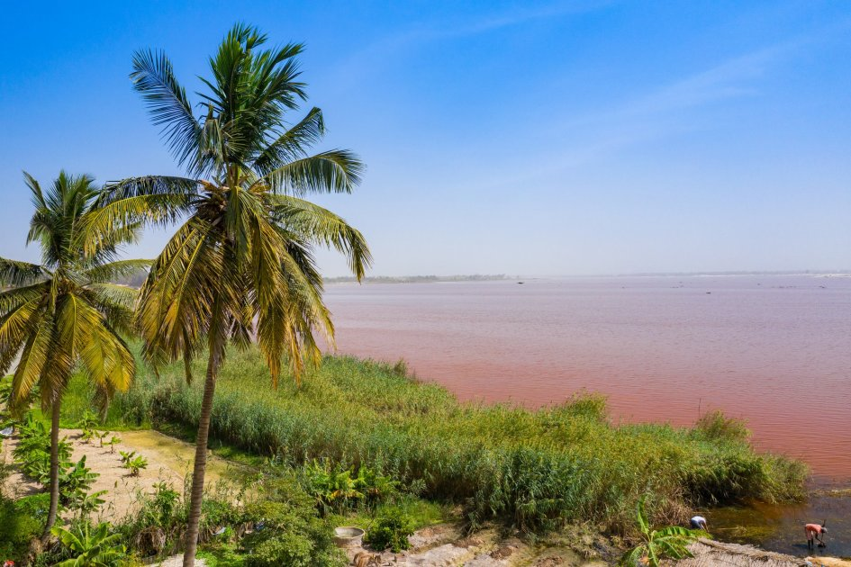

<h2>3. Озеро Ретба, Сенегал</h2>
Отправляясь в Сенегал, стоит понимать, что красочных достопримечательностей там настолько много, что посетить все за раз вряд ли удастся. Но «вишенка на торте» достопримечательностей Сенегала – это загадочное «розовое озеро» Ретба – одно из красивейших мест на Земле. Выглядит оно точно как картинка из детской книжки — белоснежные берега и розовая вода. В ответе за такую необычную окраску древнейшие цианобактерии, обитающие в соленом озере.
</br>

</br>
Добраться туда довольно просто: озеро расположено всего в 30 км от местной столицы, Дакара. Местные жители давно поняли, что место пользуется огромным спросом у туристов и охотно предлагают трансфер к нему.
</br>


